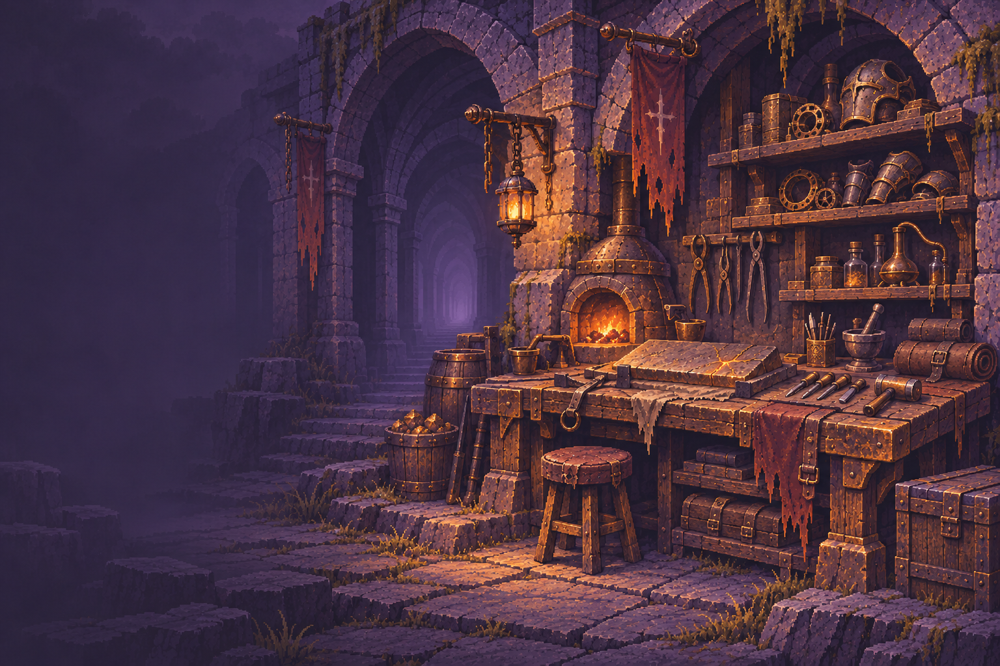
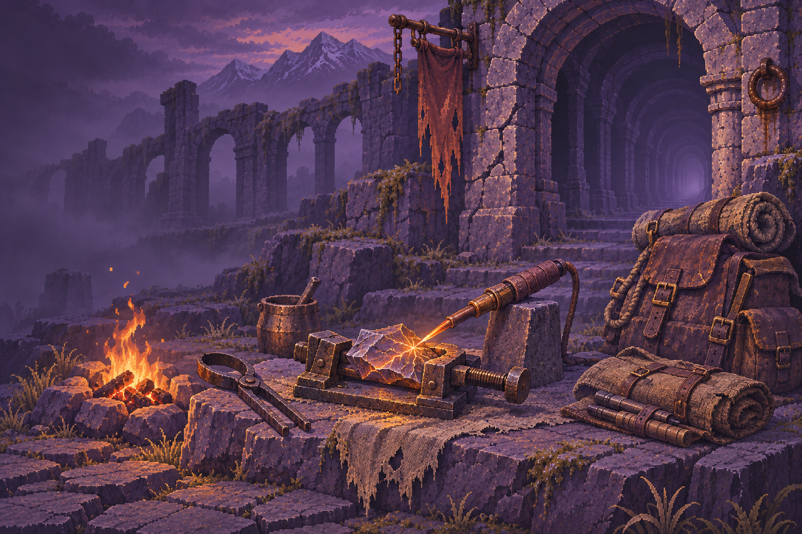
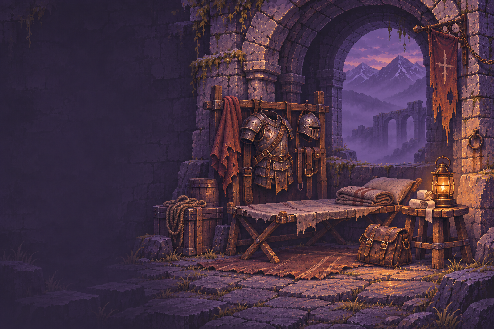
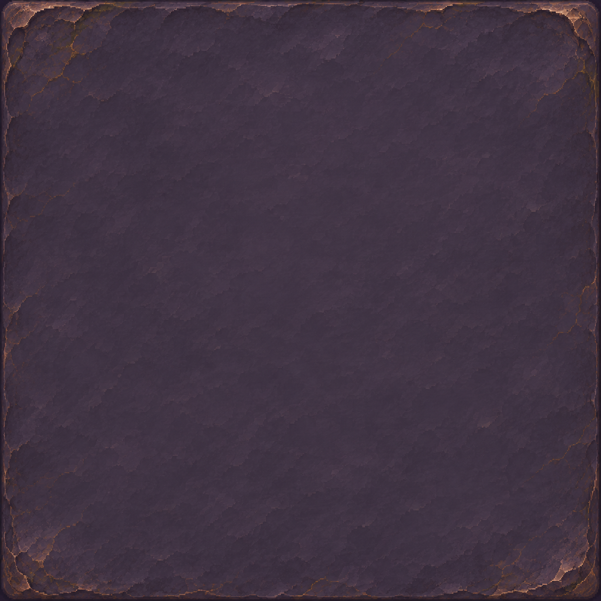
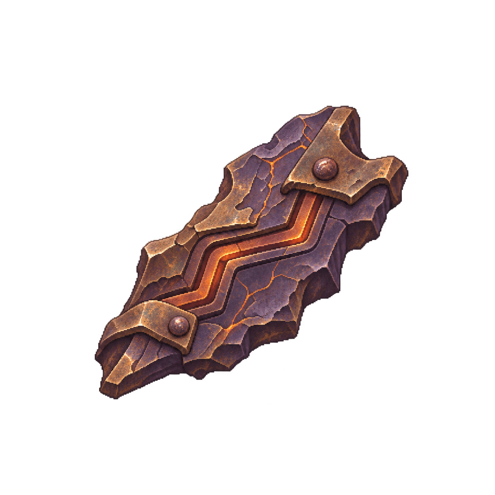
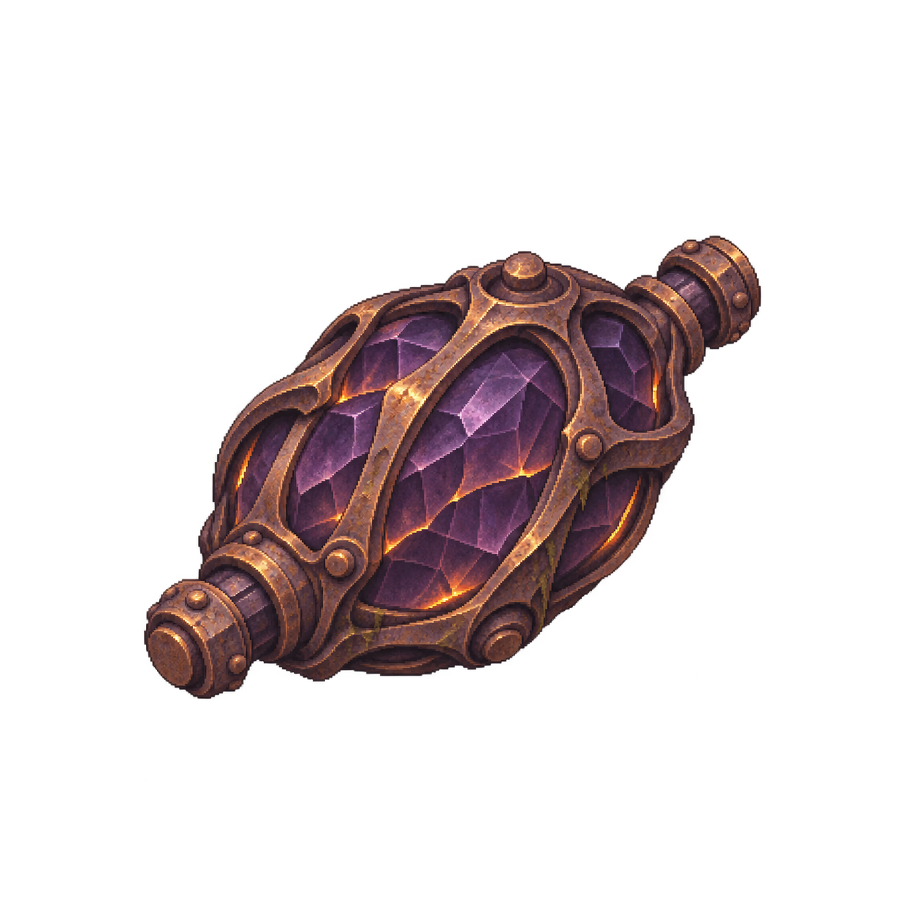
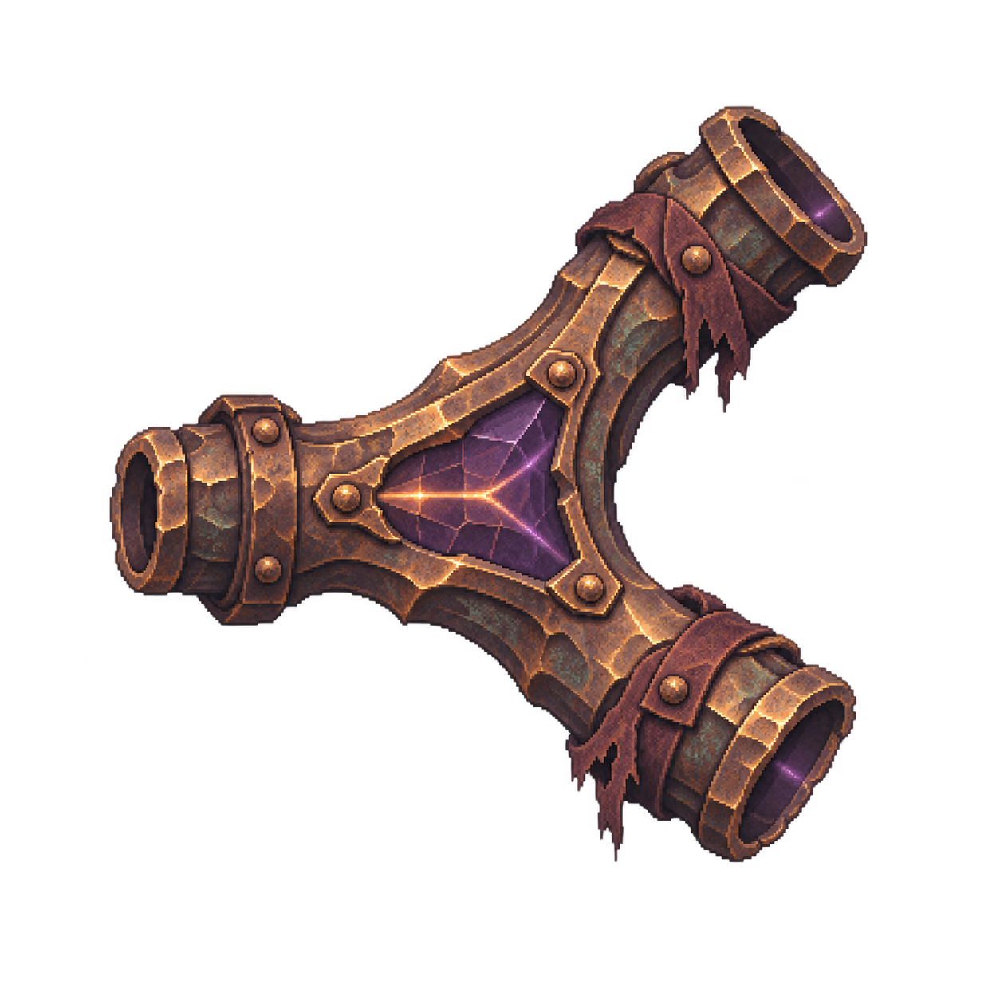
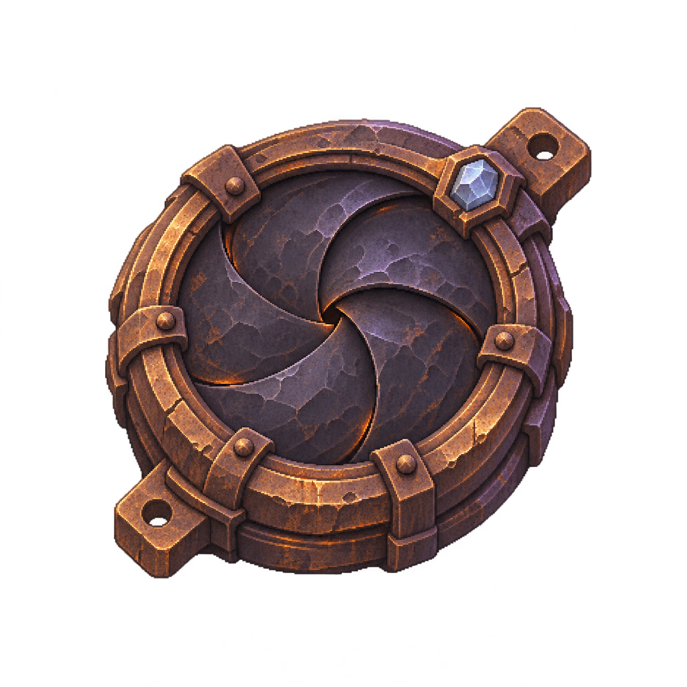

沿用余烬前哨风格 · 场景、底材与透明物件 · 精确格子/端口/线路由代码绘制
场景 / ENVIRONMENTS

veteran.scene.workshop
veteran.scene.field
veteran.scene.recovery底材与构件 / MATERIAL & RELICS

veteran.surface.board
veteran.relic.channel
veteran.relic.capacitor
veteran.relic.splitter
veteran.relic.threshold